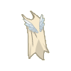
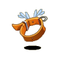
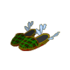
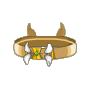

Menu barbok'you

| Niveau 103 | Cape du Dragon Cochon | ||
|---|---|---|---|
| Recettes : | Caractéristiques : | Conditions : | |
|  | 25 Queues dragodinde rousse sauvage 18 Peaux de don dussan 18 Peaux de don dorgan 4 Queues koalak sanguin 1 Queue de dragon cochon 1 Poil de dragon cochon 1 Défense de dragon cochon |
+26 à 40 chance +11 à 15 prospection +4 à 6 dommages +81 à 110 vitalité 4 à 6% résistance feu +4 à 5 résistance air +4 à 5 résistance eau +2 à 4 EC 4 à 6% résistance air +4 à 5 résistance feu +4 à 5 résistance neutre +4 à 5 résistance terre |
|
| Remarques : | |||
| Niveau 98 | Coiffe du Dragon Cochon | ||
|---|---|---|---|
| Recettes : | Caractéristiques : | Conditions : | |
| 31 Os de Pékeualak 25 Crânes de Chafer 12 Cubitus de Momie Koalak 4 Os de mama koalak 3 Fémurs de koalak farouche 1 Crâne du Dragon Cochon 1 Crâne de chef crocodaille |
+21 à 35 agilité +21 à 35 chance +2 à 4 CC +4 à 6 dommages +21 à 30 sagesse +6 à 10 prospection +1 à 10 résistance air +1 à 10 résistance eau +1 à 10 resistance feu +1 à 10 résistance terre +1 à 10 résistance neutre 4 à 5% résistance eau |
||
| Remarques : | |||
| Niveau 108 | Anneau du Dragon Cochon | ||
|---|---|---|---|
| Recettes : | Caractéristiques : | Conditions : | |
| 9 Ambre 8 Ambre de bambouto 8 Ivoire 5 Groin de dragon cochon 5 Saphir 5 Rubis 1 Défense de dragon cochon |
+21 à 35 chance +51 à 80 vitalité +21 à 35 agilité +21 à 35 force +16 à 25 sagesse +6 à 10 prospection +3 à 4 CC +3 à 5% dommages +3 à 5 dommages +101 à 150 initiative |
||
| Remarques : | |||
| Niveau 100 | Collier du Dragon Cochon | ||
|---|---|---|---|
| Recettes : | Caractéristiques : | Conditions : | |
|  | 30 Ivoire 25 Peaux du cochon de farle 15 Peau de bworkette 12 Slip en cuir du cochon de lait 8 Cuir noir 5 Cuir de déminoboule 1 Poil de dragon cochon |
+1 PA +31 à 50 vitalité +21 à 35 agilité +16 à 25 sagesse +16 à 20% dommages +2 à 3 CC +3 à 5 soins +3 à 5 dommages 4 à 6% résistance air 4 à 6% résistance terre |
|
| Remarques : | |||
| Niveau 93 | Mules du Dragon Cochon | ||
|---|---|---|---|
| Recettes : | Caractéristiques : | Conditions : | |
|  | 25 Peau de cochon de farle 15 Peau de don dussan 15 Queue de chef de guerre bouftou 14 Peau de don dorgan 9 Peau de maître koalak 5 Groin de dragon cochon 2 Poil de dragon cochon |
+1 PM +46 à 70 vitalité +26 à 40 chance +16 à 25 sagesse +1 créature invocable +2 à 3 dommages +6 à 10 prospection +6 à 10 résistance air +6 à 10 résistance feu +6 à 10 résistance eau |
|
| Remarques : | |||
| Niveau 77 | Ceinture Dracochoune | ||
|---|---|---|---|
| Recettes : | Caractéristiques : | Conditions : | |
|  | 1 Cuir de dragon cochon 4 Défense de dragon cochon 1 Emeraude 2 Ivoire 20 Or 2 Queue de dragocochon 1 Sang de dragon cochon |
+31 à 40 sagesse +21 à 40 chance 1 portée +2 à 3 créatures invocables 5% résistance neutre 5% résistance eau |
|
| Remarques : | |||
| 1 Items | Aucun bonus |
|---|---|
| 2 Items | +30 Vitalité / +10 Sagesse |
| 3 Items | +40 Vitalité / +20 Sagesse / +10 Agilité / +10 Chance |
| 4 Items | +40 Vitalité / +20 Sagesse / +10 Agilité / +10 Chance |
| 5 Items | +50 Vitalité / +30 Sagesse / +20 Agilité / +20 Chance / +10 Prospection |
| 6 Items | +60 Vitalité / +40 Sagesse / +30 Agilité / +30 Chance / +15 Prospection |
| 7 Items | +1 PM / +120 Vitalité / +60 Sagesse / +50 Agilité / +50 Chance / +30 Prospection |
Dofus est un MMORPG édité par Ankama." Barbok " est un site non-officiel sans aucun lien avec Ankama.
Toutes les illustrations sont la propriété d'Ankama Studio et de Dofus. Le contenu de ce site a été rédigé initialement par Immortal, il ne s'agit que d'une remise en ligne effectuée par Eternal Games.